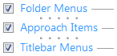

Welcome to KO Approach, a desktop utility application designed to speed up file navigation in Windows Explorer. Unlike the traditional way of accessing files where a window needs to be opened to reveal a folder's content, KO Approach offers a convenient and easy to navigate set of hierachical menus.
When KO Approach is first launched, it automatically displays its Options window enabling you to quickly view and/or edit its settings. You will be opening it each time a certain parameter needs to be modified. The window is presented as a number of tabs.
In the topmost part of the Features tab is a section with three check boxes each of which toggles a corresponding program Feature.
You can use Folder Menus to quickly browse the contents of any folder right from Windows Explorer. To take advantage of Folder Menus do the following:
You can use Approach Items to rapidly access your favorite files, folders, and Web addresses from the menu that is displayed whenever you click on the KO Approach Tray icon .
You can customize this menu by adding shortcuts or even creating individual folders inside a special directory named KO Approach Items.
To start using this feature do the following:
Read more about Approach Items.
Whenever you have a folder opened Windows Explorer, you can browse its entire ancestor hierarchy by CTRL+clicking the window's title bar.
To start using this feature do the following: